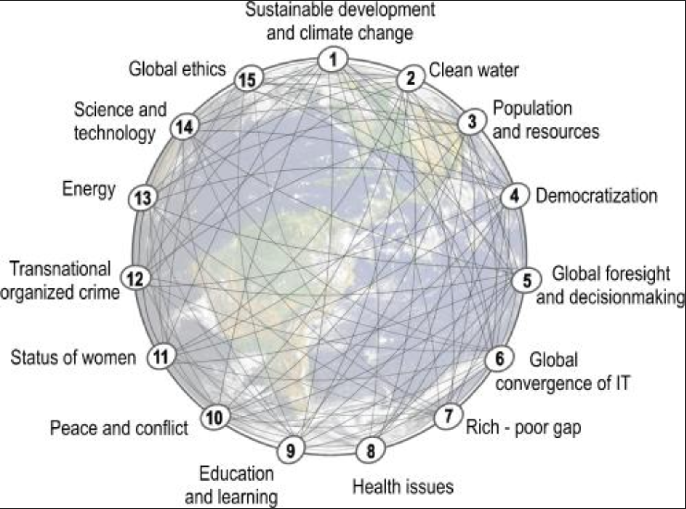

Urban Big Data Analytics
Class 5Spatial Data
July 24, 2018
Instructor: Andy Hong, PhD
Postdoctoral Research and Teaching Fellow
School of Population and Public Health
University of British Columbia
Any quetions about Assignment 3?
- Help you get familiar with R coding
- If you are new to R, it will be difficult
- If you are new to coding, it will be extremely difficult
- Don't worry, we will cover it tomorrow
- Remember, coding is like talking to a computer
Spatial database
What are Spatial data?
- Data that have geographic information
- Coordinates, addresses, postal codes
- Spatial data are mulit-dimensional: x, y, z ...
- Long history: geography, forestry ...
Why spatial data?
- Locational data are valuable
- Satellites, mobile devices, drones, vehicles, etc.
- Tracking people movement
- Tracking goods movement
- Tracking animal movement
- Big companies: Google, Apple, Microsoft, Baidu, Uber, Didi
New York City Transit
15 Global Challenges

Four use cases
- Vegetation health
- Global fishing Watch
- Extreme weather events
- Terrorist incidents
Vegetation health
https://bit.ly/2NI1sEG
Global fishing watch
https://bit.ly/2DGqePX
Extreme weather events
https://bit.ly/2JP2qMI
Terrorist incidents
https://bit.ly/2fksctK
Types of spatial data
Key elements
Projection! Projection! Projection!
- Most important information
- The earth is not flat
- If it's not correct, maps won't match
- Most maps have WGS84 projection
Spatial data files
- ArcGIS Shapefiles: *.shp
- Google map files: *.kml, *.kmz
- GeoJSON: spatial version of JSON (Javascript Object Notation)
- Text: Longitude (X), Latitutude (Y) information
Coordinates (points)

Joining data
- Need a common column
- Need to match data types
- Left join mostly, some times inner join, but hardly right join